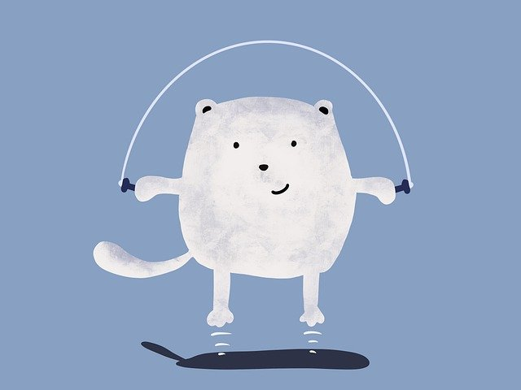
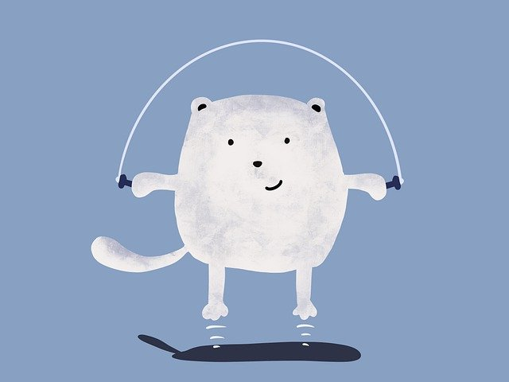

Andrzej Kocon - dziennik najlepszego programisty JavaScript w Sokółce
Uwaga będzie to tutaj moim pamiętnikiem. I zostanę tym programistą, zobaczycie. BOXXPLAY TO KUPA!
DUPA
Uwaga będzie to tutaj moim pamiętnikiem. I zostanę tym programistą, zobaczycie. BOXXPLAY TO KUPA!
DUPA
